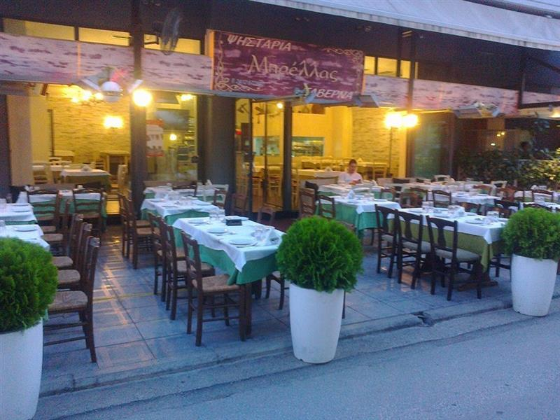
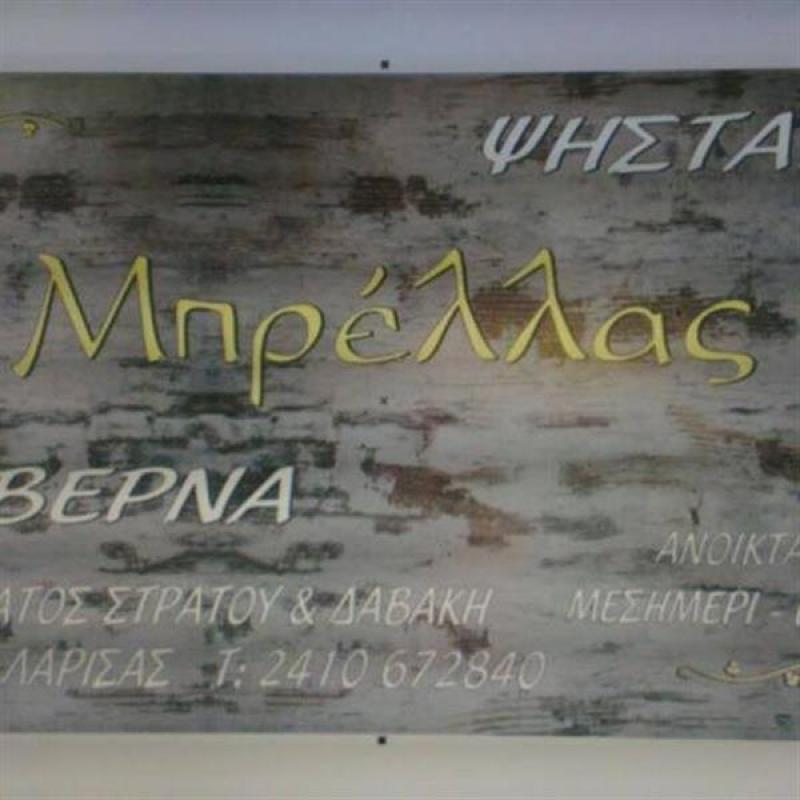

Παραδοσιακή ψησταριά — ταβέρνα στην καρδιά της Νεάπολης, απέναντι από την πλατεία. Ζουμερά ψητά, σουβλάκι, κοντοσούβλι και κοκορέτσι της ώρας, με γρήγορο σερβίρισμα και τιμές λογικές.

Η Ψησταριά — Ταβέρνα «Μπρέλλας» βρίσκεται σε μια ζεστή, ρουστίκ ατμόσφαιρα στη Νεάπολη της Λάρισας, με την Πλατεία Νεάπολης ακριβώς απέναντι. Τα τραπέζια μας γεμίζουν κάθε μεσημέρι και κάθε βράδυ — και ο λόγος είναι απλός: καλή ποιότητα και γρήγορο σερβίρισμα.
Εδώ όλα ψήνονται στα κάρβουνα. Ζουμερές μπριζόλες και τρυφερά παϊδάκια, κεμπάπ από χοιρινό, μοσχάρι και κοτόπουλο, και ποιοτικό κοκορέτσι που γυρίζει στη σούβλα. Παραδοσιακή ελληνική κουζίνα, φτιαγμένη με μεράκι, σε τιμές λογικές.
Της ώρας, ψημένα με προσοχή στη χόβολη.
Χωρίς αναμονή, όπως αρμόζει σε ψησταριά.
Οικονομική επιλογή για όλη την οικογένεια.

Απέναντι από την Πλατεία Νεάπολης, στη γωνία Β΄ Σώματος Στρατού & Δαβάκη.
Β΄ Σώματος Στρατού 22, Νεάπολη
Λάρισα 413 34
Μεσημέρι ή βράδυ, ελάτε στη Μπρέλλας για ψητά της ώρας. Για μεγάλες παρέες, ένα τηλεφώνημα αρκεί.
2410 672 840